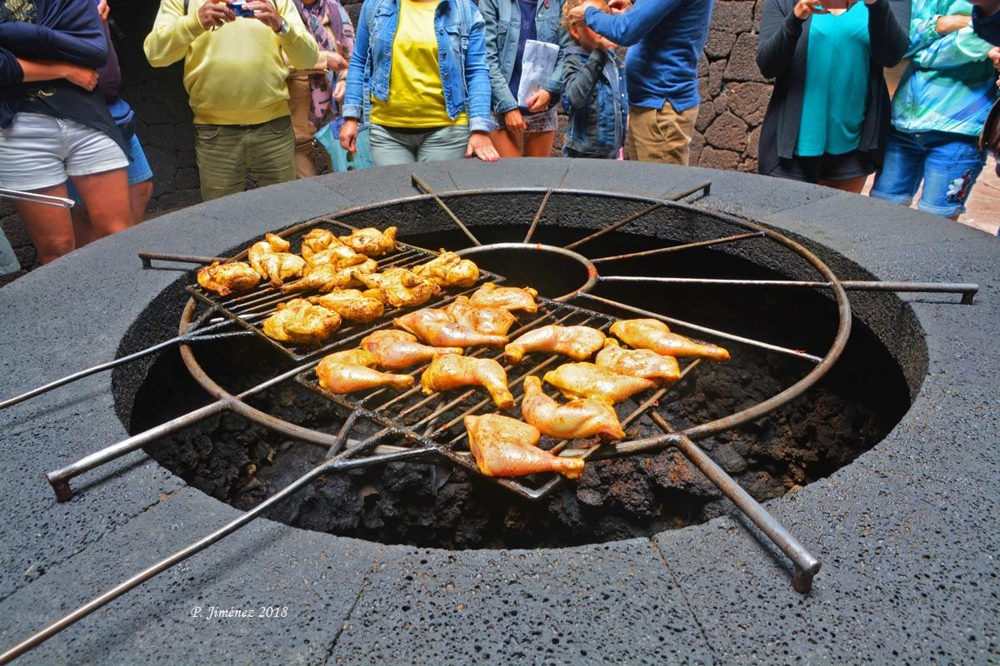
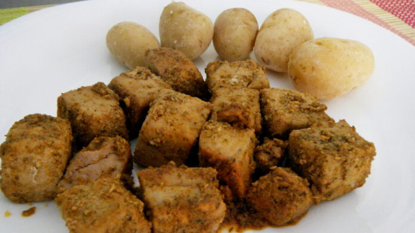
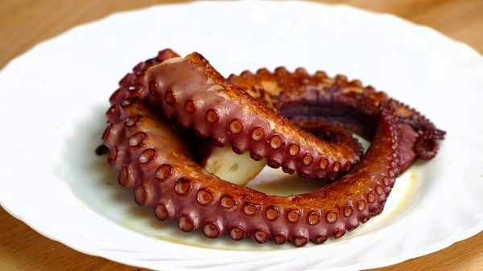
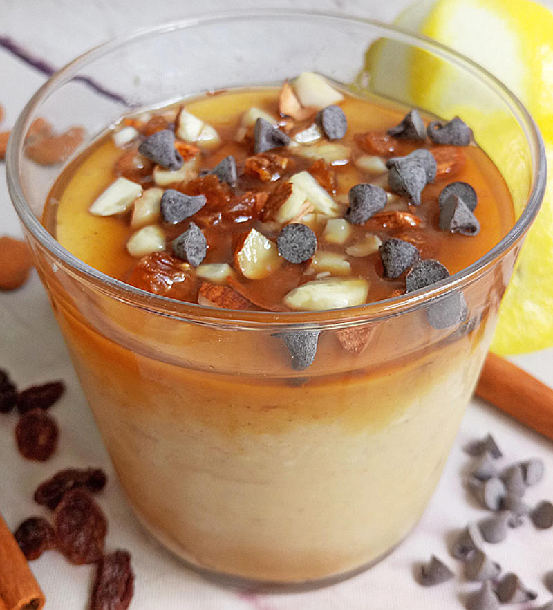
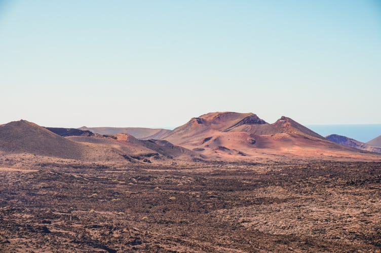
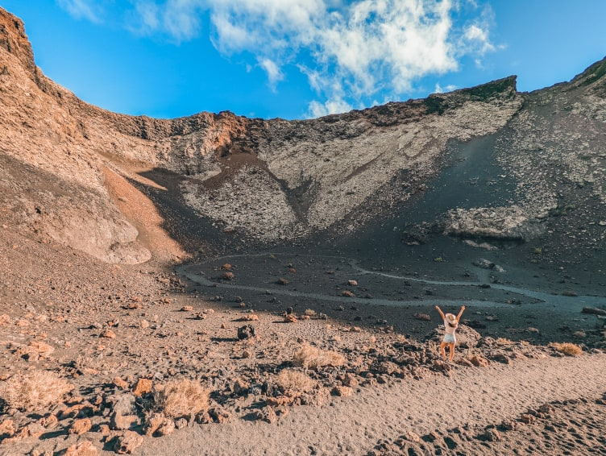
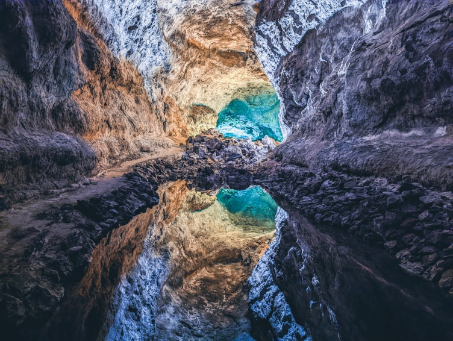
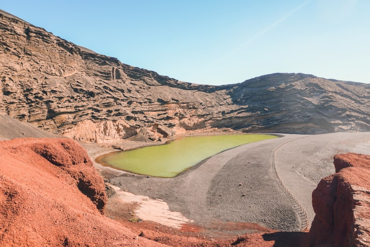

Cien Volcanes

Pollo al volcán |
Aunque no deja de ser un plato de pollo asado, las peculiaridades de su elaboración lo hacen, no ya un plato típico de Lanzarote, sino más bien un plato casi exclusivo del Timanfaya. Y es que gracias a que los volcanes del parque Natural del Timanfaya siguen activos, además de las diferentes demostraciones geotérmicas que podremos disfrutar, también podremos degustar, en su restaurante panorámico, de pollo asado con el calor del propio volcán, que le da una jugosidad y un sabor especial. Sin duda una experiencia única que solamente podrás realizar en Lanzarote. |

Atún en adobo |
El atún en adobo es un plato típico de la isla de Lanzarote que se cocina con un majado hecho a base de ajos, pimienta, laurel, pimentón, aceite, tomillo, orégano, vinagre y sal. Esta mezcla de ingredientes da como resultado un plato muy rico y aromático que combina perfectamente con la jugosa carne del atún. Suele presentarse bañado en su salsa y acompañado de papas y un buen pan para mojar. |

Pulpo a la plancha |
Lo encontrarás en todos sitios y durante todo el año pues es, sin duda, uno de los platos más demandados por locales y foráneos. Suele presentarse primero cocido y luego terminado de cocinar a las brasas o a la plancha, lo que le da un extraordinario sabor a parrilla con un ligero toque crujiente en su piel. Suele acompañarse de.. adivina… papas arrugadas con mojos, que junto con un buen vino Malvasía volcánica ofrecen la combinación perfecta. |

Frangollo |
Para acabar la comida con algo dulce, os recomendamos uno de los postres típicos de Lanzarote, el Frangollo. Similar a un flan de sabor muy dulce, está preparado a base de harina, leche, huevo, pasas y azúcar. |
|
Pasear por este parque es como imaginarte estar en otro mundo. Colores rojos, negros y ocres repletos de restos de lava y volcanes por doquier. Un paisaje único que merece una explicación como es debida. Para comenzar la visita al Parque Nacional de Timanfaya te propongo visitar el Centro de Interpretación de Mancha Blanca. La entrada es gratuita y allí entenderás por qué este lugar es tan espectacular. |

Parque Nacional de Timanfaya |
|
Entramos ahora en la zona del parque al lado de Timanfaya que es parque natural, pero no nacional. Como seguramente te vas a quedar con ganas de más después de haber visitado Timanfaya, aquí te propongo hacer alguna ruta de senderismo por libre. Además, no es necesario reservar. Aquí las opciones son muy variadas. La ruta de Caldera Blanca es una de las más famosas. Se trata de una ruta circular de 9 kilómetros que se puede hacer en unas tres horas y media. Desde esta ruta se ve perfectamente el cráter desde lo alto y se llega a ver incluso La Graciosa a lo lejos. Otra opción es la ruta al Volcán del Cuervo, muy sencilla y sin apenas desnivel. La ruta te lleva directamente hasta el cráter de un volcán formado durante la erupción de Timanfaya. La caminata es muy fácil y sólo se tarda una hora ida y vuelta. |

Parque Natural de los Volcanes |
|
¿Alguna vez has visitado un tubo volcánico por dentro? Si la respuesta es aún no, no te preocupes. En Lanzarote vas a tachar esta misión de tu lista viajera. Y es que la Cueva de los Verdes realmente ni es una cueva ni tiene nada de verde. Se trata de un tubo que se formó naturalmente durante la erupción del Volcán Corona hace 5.000 años. |

Cueva de los Verdes |
|
Un lugar lleno de contrastes justo al borde del mar. Se trata de una charca verde que se encuentra en el cráter de un volcán sumergido en el mar. El color de la charca contrasta con el negro de la playa que hay justo al lado. Este color se debe a las algas que se encuentran en el fondo del charco. |

Charco de los Clicos |